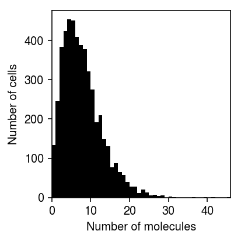
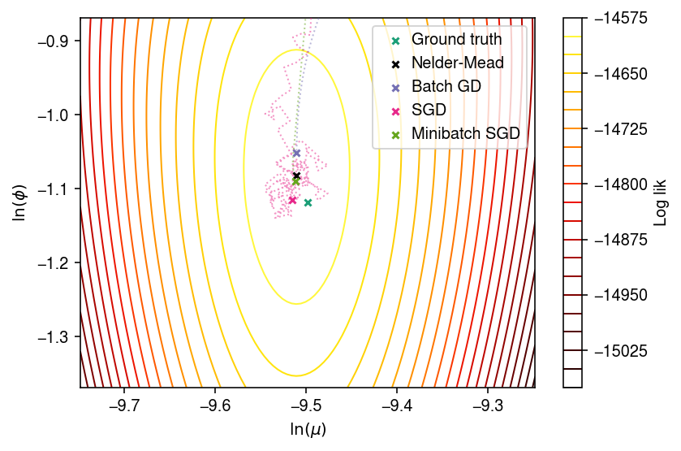

Poisson-Gamma log likelihood surface
Table of Contents
Introduction
We previously implemented maximum likelihood estimation of the ZINB model
\begin{align*} x_{ij} \mid x_i^+, \lambda_{ij} &\sim \operatorname{Poisson}(x_i^+ \lambda_{ij})\\ \lambda_{ij} &\sim g_j(\cdot) = \pi_j \delta_0(\cdot) + (1 - \pi_j) \operatorname{Gamma}(1/\phi_j, 1/(\mu_j\phi_j)) \end{align*}via batch gradient descent. We chose this algorithm because in the motivating application (variance QTL mapping; Sarkar et al. 2019):
- The parameters \(\mu_j, \phi_j, \pi_j\) had a structure (one set of parameters per donor, per gene), resulting in >1.5 million parameters in total to be estimated from the data
- Observed techncial covariates had effects which were shared across donors (due to randomization in the study design; this makes them estimable from the data, but complicates the model)
- The algorithm is amenable to automatic differentiation and GPU computation
However, in our benchmarking for this study, this implementation has a major drawback: it requires memory on the order of the dimensions of the data. This is especially problematic for large, sparse data (e.g. 10X Genomics data). To address this problem, we have re-implemented this approach using stochastic gradient descent (in package scmodes). Here, we investigate convergence problems in this implementation.
Setup
import numpy as np import scipy.stats as st import scmodes.sgd import scqtl.simple import torch import torch.utils.data
%matplotlib inline %config InlineBackend.figure_formats = set(['retina'])
import colorcet import matplotlib.pyplot as plt plt.rcParams['figure.facecolor'] = 'w' plt.rcParams['font.family'] = 'Nimbus Sans'
Results
Likelihood surface for a simulated problem
Simulate data for a single gene, fixing \(\pi_j = 0\) for simplicity.
np.random.seed(1) # Typical values (Sarkar et al. 2019) log_mu = np.random.uniform(-12, -6) log_phi = np.random.uniform(-4, 0) s = 1e5 n = 5000 lam = np.random.gamma(shape=np.exp(-log_phi), scale=np.exp(log_mu + log_phi), size=n) x = np.random.poisson(lam=s * lam)
Plot the simulated data.
plt.clf() plt.gcf().set_size_inches(3, 3) plt.hist(x, bins=np.arange(x.max() + 1), color='k') plt.xlim(0, x.max()) plt.xlabel('Number of molecules') plt.ylabel('Number of cells') plt.tight_layout()

Compute the log likelihood surface in a close window about the true value.
n_points = 100 window = 0.25 log_mu_grid = np.linspace(log_mu - window, log_mu + window, n_points) log_phi_grid = np.linspace(log_phi - window, log_phi + window, n_points) z = np.zeros((n_points, n_points)) for x_ in range(n_points): for y_ in range(n_points): z[y_, x_] = st.nbinom(n=np.exp(-log_phi_grid[y_]), p=1 / (1 + s * np.exp(log_mu_grid[x_] + log_phi_grid[y_]))).logpmf(x).sum()
Compute the MLE using the Nelder-Mead algorithm.
mu_hat, inv_phi_hat, llik = scqtl.simple.fit_nb(x, s)
Trace the parameter values through batch gradient descent, starting from \(\ln\mu = 0, \ln\phi = 0\).
def tracing_gradient_descent(x, s, batch_size=1, max_epochs=10, **kwargs): D = torch.utils.data loader = D.DataLoader( D.TensorDataset(torch.tensor(x.reshape(-1, 1), dtype=torch.float), torch.tensor(s * np.ones((n, 1)), dtype=torch.float)), batch_size=batch_size, pin_memory=True) m = scmodes.sgd.PoissonGamma(1) m.fit(loader, max_epochs=max_epochs, trace=True, **kwargs) return m
batch_gd = tracing_gradient_descent(x, s, batch_size=n, max_epochs=1000)
batch_trace_x = np.array(batch_gd.trace)[:,0] batch_trace_y = -np.array(batch_gd.trace)[:,1] batch_trace_keep = np.logical_and.reduce( (log_mu - window < batch_trace_x, batch_trace_x < log_mu + window, log_phi - window < batch_trace_y, batch_trace_y < log_phi + window))
Trace the parameter values through SGD, starting from \(\ln\mu = 0, \ln\phi = 0\).
# Important: learning rate needs to be reduced compared to batch gradient # descent. (The default is 1e-2.) sgd = tracing_gradient_descent(x, s, batch_size=1, max_epochs=5, lr=1e-3)
sgd_trace_x = np.array(sgd.trace)[:,0] sgd_trace_y = -np.array(sgd.trace)[:,1] sgd_trace_keep = np.logical_and.reduce( (log_mu - window < sgd_trace_x, sgd_trace_x < log_mu + window, log_phi - window < sgd_trace_y, sgd_trace_y < log_phi + window))
Trace the parameter values through minibatch SGD, starting from \(\ln\mu = 0, \ln\phi = 0\).
mb_sgd = tracing_gradient_descent(x, s, batch_size=100, max_epochs=100)
mb_sgd_trace_x = np.array(mb_sgd.trace)[:,0] mb_sgd_trace_y = -np.array(mb_sgd.trace)[:,1] mb_sgd_trace_keep = np.logical_and.reduce( (log_mu - window < mb_sgd_trace_x, mb_sgd_trace_x < log_mu + window, log_phi - window < mb_sgd_trace_y, mb_sgd_trace_y < log_phi + window))
Plot the log likelihood surface and optimization traces.
cm = plt.get_cmap('Dark2') plt.clf() plt.gcf().set_size_inches(6, 4) cf = plt.contour(log_mu_grid, log_phi_grid, z, levels=20, cmap=colorcet.cm['fire'], linewidths=1) plt.scatter(log_mu, log_phi, marker='x', c=cm(0), s=16, zorder=10, label='Ground truth') plt.scatter(np.log(mu_hat), -np.log(inv_phi_hat), marker='x', c='k', s=16, zorder=10, label='Nelder-Mead') plt.scatter(*batch_gd.opt(), marker='x', c=cm(2), s=16, zorder=10, label='Batch GD') plt.scatter(*sgd.opt(), marker='x', c=cm(3), s=16, zorder=10, label='SGD') plt.scatter(*mb_sgd.opt(), marker='x', c=cm(4), s=16, zorder=10, label='Minibatch SGD') plt.plot(batch_trace_x[batch_trace_keep], batch_trace_y[batch_trace_keep], c=cm(2), marker=None, ls=':', lw=1, alpha=0.5, zorder=4, label=None) plt.plot(sgd_trace_x[sgd_trace_keep][::100], sgd_trace_y[sgd_trace_keep][::100], c=cm(3), marker=None, lw=1, ls=':', alpha=0.5, zorder=5, label=None) plt.plot(mb_sgd_trace_x[mb_sgd_trace_keep][::100], mb_sgd_trace_y[mb_sgd_trace_keep][::100], c=cm(4), marker=None, lw=1, ls=':', alpha=0.5, zorder=5, label=None) cb = plt.colorbar(cf) cb.set_label('Log lik') plt.legend(frameon=True, loc='best', handletextpad=0) plt.xlabel('$\ln(\mu)$') plt.ylabel('$\ln(\phi)$') plt.tight_layout()
